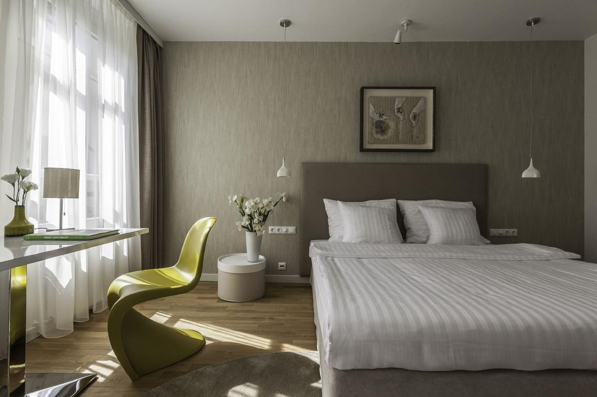
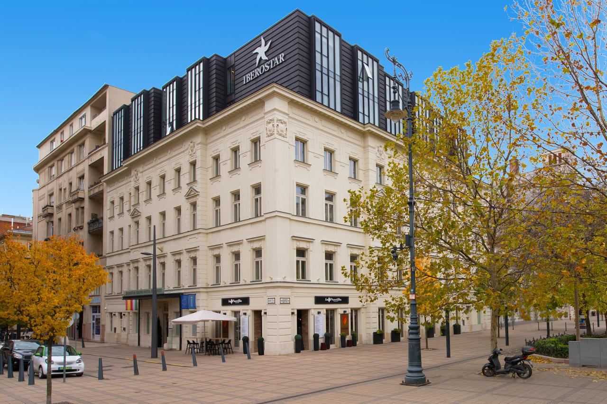

Buda PEST
Budapest is the capital city of Hungary, and as such, it is the country’s principal political, cultural, commercial, industrial, and transportation center. With less than 2 millions of its inhabitants it is the biggest city of the country. Half of the university students of the country study here, and similar ratio, half of the nation’s GDP is earned here. Researchers represent themselves even higher than 50% in Budapest. It is a city of diversity where it is easy to find numerous marks of different historical eras. However, you will soon to discover that you are witnessing everywhere the rapid transformation of the capital in several respects. There are countless historical and architectural treasures that will soon burn into your soul, the two major parts of the city separated by the ever-so-nice (sometimes blue) Danube river: Buda in the West and Pest in the East.
Quick History
Budapest
In the First World War (1914 – 1918), the Austro Hungarian Empire, along with Germany, Bulgaria and Turkey was a member of the defeated Central Powers. After the war and the collapse of the Austro Hungarian Empire, Hungary became an independent state. In the postwar period Trianon agreement defined the boundaries of the new state; Hungary remained without two-thirds of its territory. After a brief life of the Hungarian Soviet Republic under the leadership of Bela Kun, the Hungarian monarchy was restored but before the determination of the crowns successor, the role of regent was performed by Miklos Horthy. By the end of World War II from 1945 to 1989, Hungary was part of the Soviet sphere of influence and the Warsaw Pact. Anti communist and anti-Soviet rebellion occurred in 1956. The revolt was brutally suppressed, and the then Prime Minister Imre Nagy was sentenced to death. Major changes in the political life of Hungary occurred at the end of 1989, greater freedom in organizing and political action, agreement on the withdrawal of the Soviet army was signed and the state changed its name to Republic of Hungary. Communists lost the power and Hungary became a member of NATO and the European Union..
Must Words
HOGY VAGY?
MENNYI AZ IDŐ?
HOL VAGYOK?
KÉREK EGY SÖRT / BORT / PÁLINKÁT.
MERRE VAN A SZIMPLA?
EGÉSZSÉGEDRE!
JO ÉTVÁGYAT!
Best Things To Do
| Parliament Building | The Shoes on the Danube Bank | Fisherman’s Bastion | MMargaret Island | The Chain Bridge |
|---|---|---|---|---|
|
The Hungarian Parliament Building, which was designed and built in the Gothic Revival style, is one of the largest buildings in Hungary, and is home to hundreds of parliamentary offices. Although the impressive building looks fantastic from every angle, to see the whole building in its full glory, it is worth viewing it from the other side of the Danube. |
What is it? A heartbreaking memorial to 3,500 people killed by fascists in Budapest during the Second World War. |
What is it? Built between 1895 and 1902 to celebrate the thousandth birthday of the Hungarian state, the Fisherman’s Bastion is an impressive neo-Gothic viewing terrace situated on the Buda bank of the Danube, on Castle Hill. |
What is it? Surely Budapest’s most impressive green space, Margaret Island is a 2.5km-long island of quiet parkland on the Danube, linked to Buda and Pest by bridges at either end. |
What is it? Opened in 1849, Budapest’s magnificent suspension bridge connects the Buda (West) and Pest (Eastern) sides of the city, arching over the River Danube. Designed by an English engineer and built by a Scot, the bridge is a symbol of national pride and economic advancement. |
Restaurants And Cafes
Mazel Tov
What is it? A spacious glass-roof restaurant that serves a moreish hybrid of Israeli-Mediterranean food and totally on-point cocktails.
Check websiteBorkonyha
What is it? A Michelin-starred restaurant with meat-laden dishes and more than 200 wines.
Check websiteBorbíróság
What is it? An understated restaurant with a select Hungarian menu and more than 100 excellent wines.
Check websiteDobrumba
What is it? A lively and trendy 7th District restaurant that looks to the Middle East and the Mediterranean for inspiration.
Check websiteVakvarju E’tterem
What is it? Impeccably blended flavours in a cosy, sophisticated setting in the heart of the city’s trendy Jewish quarter in the 7th District.
Check websiteHotels
Casati Budapest Hotel
Address: Paulay Ede utca 31., 1061 Budapest, Hungary
E-mail: info@casatibudapesthotel.com
Click hear for more details Iberostar Grand Hotel Budapest
Address: Október 6. utca 26., 1051 Budapest, Hungary
E-mail: grand.hotel.budapest@iberostar.com
Click hear for more details Corinthia Hotel Budapest
Address: Erzsébet körút 43-49., 1073 Budapest, Hungary
E-mail: budapest@corinthia.com
Click hear for more details
Bo18 Hotel Superior
Address: Vajdahunyad utca 18, 1082 Budapest, Hungary
E-mail: reservation@bo18hotel.hu
Click hear for more details
Prestige Hotel Budapest
Address: Vigyázó Ferenc utca 5., 1051 Budapest, Hungary
E-mail: prestigebudapest@zeinahotels.com
Click hear for more details